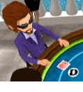

23 |
Règles de base |
 |
|
Le Texas Hold 'Em est un jeu de cartes communes comportant quatre tours de mises.
L'un des joueurs tient le rôle de donneur. Cette position s'appelle le bouton, et chaque joueur en hérite en sens horaire après chaque tour.  Les deux joueurs à gauche du donneur sont appelés respectivement blindeur et surblindeur. Ce sont les seuls joueurs qui mettent de l'argent dans le pot avant que les cartes ne soient distribuées.
Tous les joueurs reçoivent deux cartes face cachée, appelées cartes fermées.
Le premier tour de mises commence avec le joueur assis immédiatement à gauche du surblindeur et se poursuit en sens horaire. Quand le premier tour est terminé, trois cartes communes appelées le flop sont retournées face vers le haut.
Le deuxième tour de mises commence avec le joueur encore en jeu assis à gauche du bouton. Le tour se poursuit ensuite en sens horaire. Quand le deuxième tour est terminé, une quatrième carte commune est retournée face vers le haut.
Le troisième tour de mises commence avec le joueur encore en jeu assis à gauche du bouton. Le tour se poursuit ensuite en sens horaire. Quand le troisième tour est terminé, une cinquième carte commune est retournée face vers le haut.
Le quatrième tour de mises commence avec le joueur encore en jeu assis à gauche du bouton. Le tour se poursuit ensuite en sens horaire. Les joueurs doivent combiner leurs cartes fermées avec les cartes communes pour obtenir la meilleure main de 5 cartes possible. Ils peuvent utiliser deux, une ou aucune (jouer le tableau) carte(s) fermée(s) pour former une main. La meilleure main de 5 cartes remporte le pot. Pour plus d'informations, veuillez consulter la section 'Mains'. Pour des raisons de fluidité du jeu, chaque joueur dispose d'un temps limité pour jouer dans les parties en ligne. Note : Beaucoup de joueurs vont essayer de bluffer pour vous forcer à abandonner ou à suivre leur main. D'autres vont plutôt choisir la sécurité, préférant attendre la main parfaite. Pour en savoir plus, veuillez consulter la section 'Trucs et astuces'. |


 |
 |
 |